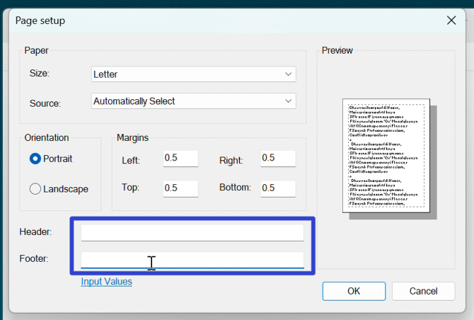
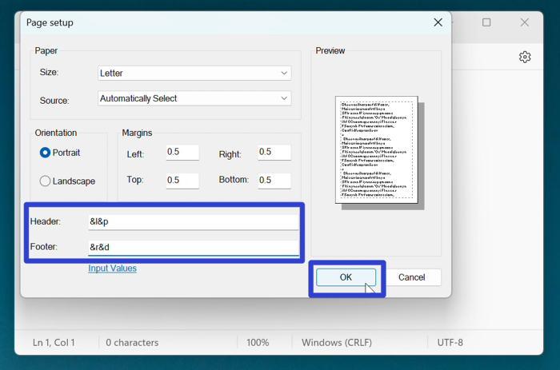
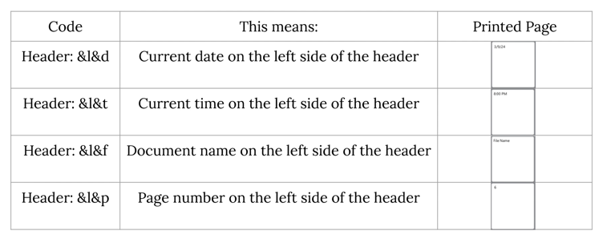
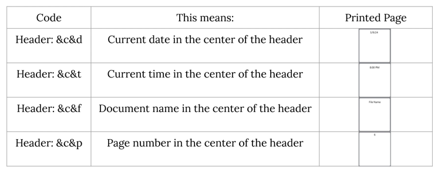
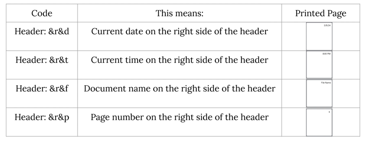
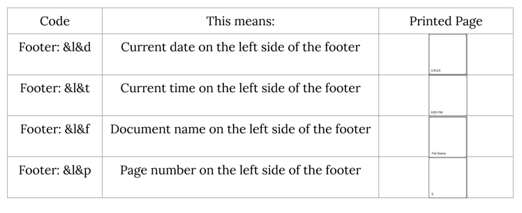
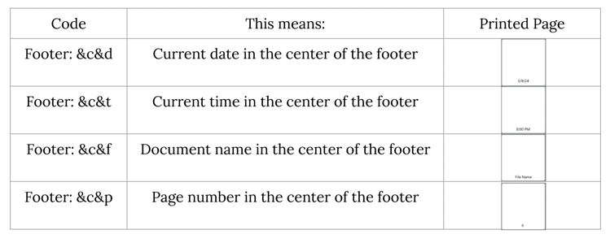
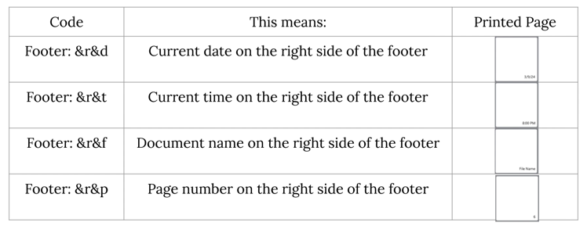
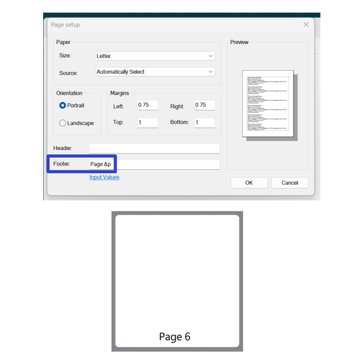
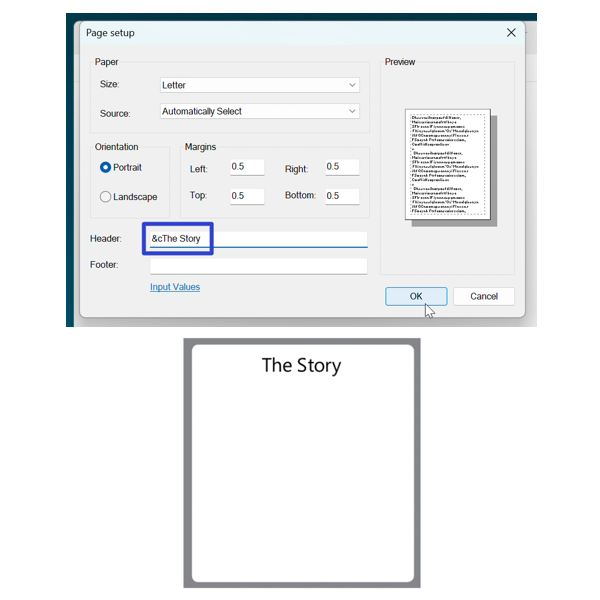

How to Set the Header/Footer in the Microsoft Notepad App (Windows 11)
This tutorial covers:
1. How to Remove the Header/Footer
2. How to Add the Header/Footer
3. What are the Header and Footer Codes?
4. How to Add Custom Words to the Header/Footer
No time to scroll down? Click through this presentation tutorial:
Watch a tutorial video:
How to Remove the Header/Footer
- Step 1: First open a Notepad window. In the lower left click “More settings”.

- Step 2: In the menu that opens, click “Page setup”.

- Step 3: In the “Page setup” window that opens, click inside the “Header:” and “Footer:” fields, and press Backspace or Delete to clear them. When these fields are empty, Notepad removes the header and footer from the printed document. 
How to Add the Header/Footer
- Step 1: Open a Notepad window. In the upper left click the “File” button.
- Step 2: In the menu that opens, click “Page setup”.
- Step 3: In the “Page setup” window that opens, click inside the “Header:” or “Footer:” fields, type a code, then press Enter or click “OK”. 
- Note: For a complete list of Header and Footer codes in Notepad, please see What are the Header and Footer Codes?.
What are the Header and Footer Codes?
There are two types of codes:
- Print codes
- Alignment codes
1. Print Codes:
*Four print codes tell Notepad what to print.
| &d | &t | &f | &p |
|---|---|---|---|
| Prints current date | Prints current time | Prints document name | Prints page number |
*An example of how the print codes display in the printed document:
2. Alignment Codes:
- Three alignment codes tell Notepad where to print information.
| &l | &c | &r |
|---|---|---|
| Aligns left | Aligns center | Aligns right |
*An example of how the alignment codes display in the printed document:
To enter a valid code in Notepad, do one of the following:
- Type a print code by itself
- Type the alignment code first, followed by the print code
The following tables list all the possible combinations of alignment and print codes.
For the Header:
- All the Header left-aligned codes: 
- All the Header center-aligned codes: 
- All the Header right-aligned codes: 
For the Footer:
- All the Footer left-aligned codes: 
- All the Footer center-aligned codes: 
- All the Footer right-aligned codes: 
How to Add Custom Words to the Header/Footer
- Step 1: Open a Notepad window. In the upper left click the “File” button.
- Step 2: In the menu that opens, click “Page setup”.
- Step 3: In the “Page setup” window that opens, click the “Header:” or “Footer:” fields and type one of the following:
-
“Custom word” + print code
Footer: Page&p prints “Page 6” at the bottom of the Notepad document.

-
Alignment code + “Custom word”
Header: &cThe Story prints “The Story” at the top of the Notepad document.

Keep a copy of these instructions for later with this free tutorial PDF.